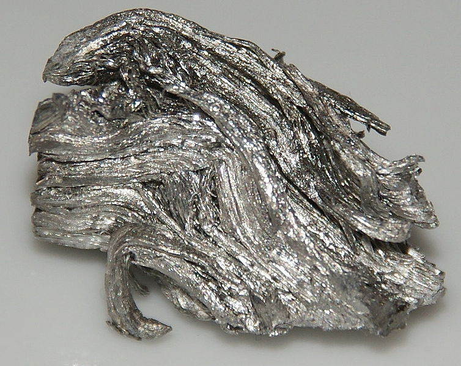

|  |
|
Holmium (Holmia, Stockholm, the home town of the discoverer of the element) is a chemical element of symbol Ho and atomic number 67 (67 protons and 67 electrons) with atomic mass 164.9 u.
It is an element of the inner transition metal series of the group of lanthanides, relatively soft and malleable, solid, silvery-white appearance, resistant to corrosion in dry air, under ambient temperature conditions. It is a rare earth found in the monazite and gadolinite minerals. It is used as a generator of magnetic fields, in nuclear reactors and in the production of lasers. It was discovered by Swiss chemists Marc Delafontaine and Jacques Louis Soret in 1878, when they observed a band of absorption in the spectrum of a hitherto unknown element. History: Holmia (latinized form of "Stockholm", Stockholm, capital of Sweden) was discovered by Swiss chemists Marc Delafontaine and Jacques Louis Soret in 1878, when they observed a band of absorption in the spectrum of a hitherto unknown element, which they termed element X. Later, in 1879, the Swedish chemist Per Teodor Cleve independently discovered the element when working with the earth "erbium" (erbium oxide). Using the method developed by Carl Gustaf Mosander, Cleve first removed all contaminants from the erbium. The result of this effort was the appearance of two new materials, one brown and one green. It named "holmia" the brown substance (named after Cleve's birthplace, Stockholm) and the "thulia" green. Later, it was found that holmia was actually holmium oxide, and thulia was thulium oxide. In 1911, O. Homberg obtained holmium (holmium oxide) with a purity grade considered satisfactory. In 1934, W. Klemm and H. Bommer obtained the metal holmium by reducing the anhydrous holmium chloride with potassium vapor. The element has also been isolated by reducing its anhydrous chlorides or fluorides with metallic calcium. Key features: Holmium is a metallic element, trivalent, rare earth, which has the highest magnetic moment (10.6μB) of all natural elements, and has other unusual magnetic properties. When combined with yttrium forms highly magnetic compounds. Holmium is a soft, malleable, reasonably corrosion resistant and stable metal in the dry air under normal pressure and temperature conditions. However, in humid air and higher temperatures, it rapidly oxidizes to form an oxide. In pure form, holmium has a metallic, silvery and shiny appearance. Applications: Because of its unusual magnetic properties, holmium was used to create the strongest artificial magnetic field generated. Holmium absorbs neutrons from nuclear fission and is used to control and moderate nuclear reactions in nuclear reactors As an additive in metal alloys. Its very high magnetic moment is suitable for the production of lasers: Ho-YIG (yttrium and iron crystal) and Ho-YLF (yttrium fluoride and lanthanum) used in medicine and dentistry. Holmium oxide, a yellow substance, was prepared by O. Homberg and is used to color glasses. Occurrence: Like other rare earths, holmium is not found in nature as a free element. It occurs combined with other elements in the minerals gadolinite, monazite and other rare earth minerals. It is extracted commercially by ion exchange of monazite sand (0.05% holmium), but it is still difficult to separate it from other rare earths. Its abundance in the earth's crust is estimated at 1.3 milligrams per kilogram. |